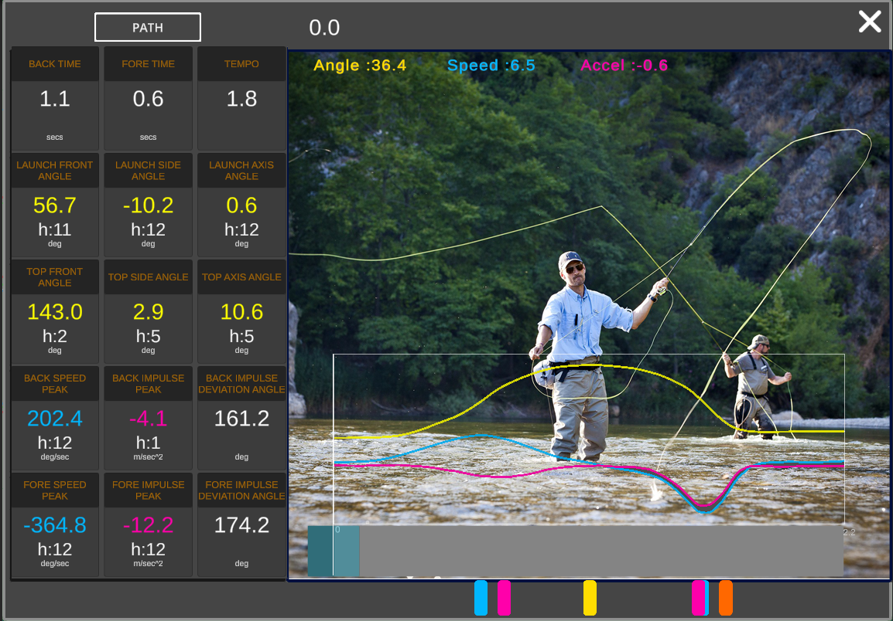

User Interface

Casting Panel
The first interface accessed after connecting with the sensor is the Casting Panel. In this panel the real-time values of Angles, Angular Velocities and Linear Accelerations are available. The left side contains a scrollbar for viewing the graphs. The right side contains the 3D model of the rod and a zoom view on the reel that allows you to check the orientation in greater detail.
Now try to rotate the rod back and forth, as if to simulate a series of false casts. You will notice that the graphs begin to plot the angle values, the hands move and the 3D model of the rod moves following the movement of your real rod. During this movement the tip of the rod leaves a trail that disappears after a few seconds. This indicates that the data is correctly transferred from the sensor to the device.
Video
If the camera is available in the device, the "VIDEO" switch appears. Activating it, the interface changes automatically to make room for the video preview window.
The use of video is highly recommended. It is in fact important to be able to associate the numerical values and the graphs to the video image of the caster.
Cast Recording
At the top of the interface there are two combo boxes. The first "START DELAY" allows you to set the delay with which recording starts with respect to the moment the button is pressed. The second "RECORD TIME" sets the duration of the recording. The countdown and then the recording starts with the "RECORD" button. An audible countdown warns of the start of the recording. During the recording, a sound warns that there are five seconds to the end of the time and a further one warns of the conclusion of the process. The volume of the audible warnings is managed by the appropriate slider. When the acquisition is finished, the "VIEW" button appears on the lower part of the screen. Pressing it opens the dynamic data preview panel.
The graphs of Angles, Angular Velocity and Linear Acceleration are displayed on three superimposed coordinate systems. On the lower part of the panel there is a slider to view the launch data along its entire length of time. Closing the preview with the X takes you back to the capture panel, to continue acquiring other casts. Once the launches to be analyzed are registered we can access the database access panel.
Data Explorer
With the "BROWSE .." button you can access the historical data which are organized on a temporal basis. A folder for each day of acquisition and a file for each cast. Selecting a cast loads the related data and the video if available. The video window is freely movable on the screen by dragging. The same window can be resized and adjusted as transparency with the two sliders on the caption.
Cast Selection
The cast generally consists of a series of false casts and the actual cast at the end. To scroll through the data, use the slider at the bottom of the panel, moving which also the seconds indication changes. The upper "CAST SELECTOR" slider is a range selector that allows you to detach the cast or false-cast segment to be analyzed. By moving the minimum and maximum slider you will notice how the selected part remains in the center of the defined range and graphs the selection also on the graph.
The next step is the actual analysis which is accessed via the "ANALISE .." button.
Analysis
The analysis page consists of a graph showing the main angle, angular velocity and acceleration charts. The relative frame of the video is visible in the background, if present. At the bottom of the graphs there is the time slider. With the movement of this slider the cursor moves and the numerical values of the graph are updated. At the same time the relative frame of the video is updated. On the slider there are colored buttons, each of which individualizes a specific moment. The description appears at the top of the screen. The colors are coded as follows: the angles in yellow, the speeds in cyan, the accelerations in magenta.
On the left side of the panel there is the 3D representation of the path of the rod tip (intended as a lever). The sliders allow you to rotate and zoom the model.
By pressing the "DATA" button you access the summary table of the data.
